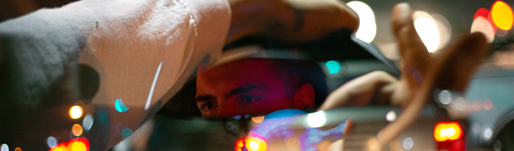

Entrevistas
 Pedro Zopelar e seu “Joy Of Missing Out”
Terceiro trabalho solo de Pedro Zopelar, Joy of Missing Out é fruto de um processo livre de experimentação, que resulta em beats feitos a partir de samples e...